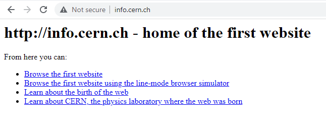

A spider knows how to spin a web. Swing, and stick, and loop and back up. You make it, you wait, and something always come. In Charlotte's web, Charlotte the barn spider thought of a word special enough to change the way people saw the world to save her friend, Wilbur the livestock pig. She spun a web says "SOME PIG," Terrific," and "Humble" as people's attention span didn't last long.
 The hometown of the webOn December 24th 1990, web came out. I was 12 years old and didn't know about internet nor web. What matters to me is that in 1990 and 1991, my family dogs Friend and Boksoon(Mary) were still with us and alive. I want to spin a web to catch people's attention, so we can protect poor animals. Even further, we can create a new technology like web to save the animals.